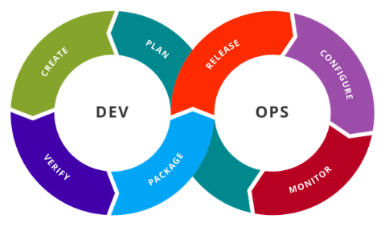
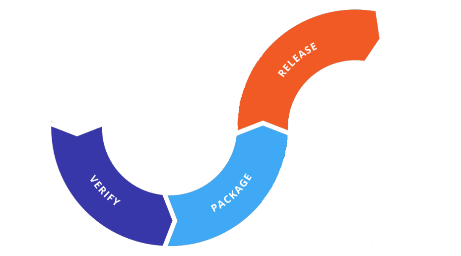

[comment]: # (mdslides presentation.md --include media) [comment]: # (The list of themes is at https://revealjs.com/themes/) [comment]: # (The list of code themes is at https://highlightjs.org/) [comment]: # (markdown: { smartypants: true }) <style type="text/css"> .reveal { font-size: 2.2em; } .reveal .code-wrapper code { white-space: pre; font-size: 2em; line-height: 1.2em; } </style> UPES-CSDV-3001 # Continuous Integration and Continuous Deployment <img src="media/devops1.png" width="50%"> By Alon Itach
### Today's agenda - What is CI/CD - Software delivery before CI/CD - CI and CD decomposed
### The bad old days - Developers work on their feature, and deliver it the operation team. Operation combine all code changes together, the software is tested. Operation teams deploy the code changes. - The deployment is infrequent, large, and done much after the code was developed, test, and delivered. - The result: **Production was broken** 😵 - The process is error-prone and could lead to inconsistencies between different deployment environments. - The (naive) product manager asks the teams to **deploy it less** and **test it more**! - **“Deploy it less!”** - the product manager develops an allergy to deployments, as every deployment breaks production. He asks operations team to deploy less. - **“Test it more!”** - the product manager asks the QA team to test it more. Testing now can take weeks or even months to identify and fix bugs, make the development process slow and inefficient.
CI/CD is a set of practices and tools used in software development to automate and streamline the process of building, testing, and deploying software.
### Continuous Integration (CI) **Continuous Integration (CI)** is the practice of frequently and automatically integrating code changes from multiple contributors into a shared repository. - Developers commit their code changes to a version control system (e.g., Git) multiple times a day. - Automated build and testing processes are triggered with every code commit to a branch representing an environment (e.g. dev or main). - Ensures that new code changes do not break existing functionality, helps catch and fix issues early in the development process. - Promotes collaboration among development teams, reduces integration problems, and leads to more stable and reliable software.
### Continuous Delivery (CD) **Continuous Delivery (CD)** focuses on automating the process of deploying code to various environments, such as development and production. - Every code change that passes automated tests is packaged into a deployable artifact, making it ready for deployment. - Deployment to a development or staging environment is dome automatically. - The decision to promote the code to production is typically a manual one. - Ensures that the software is always in a deployable state, allowing for more frequent and reliable releases. - If the deployment to an environment is done automatically, on every code change, we call it **Continuous Deployment**, if the deployment is done manually, we call it **Continuous Delivery**.
### The outcome The product manager with CI/CD in mind asks to deploy it more and test it less! - **“Deploy it more!”** - The developer is able and welcome to deploy his code as soon as it’s ready. That way, small changes are deployed to production many times a day, by developers! - **“Test it less!”** - Once new code is push to the shared code base, it is automatically deployed into the a development environment. The developer receive an immediate feedback by experimenting with his changes and testing it by himself, in addition to an automated tests that are executed against the new code.
### The DevOps toolchain 
### The DevOps toolchain - CI/CD phases 
# Thanks